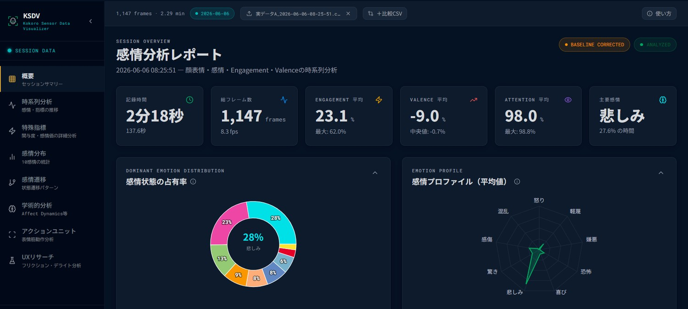
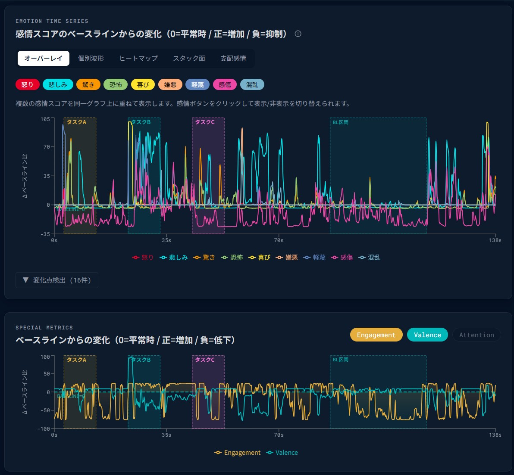
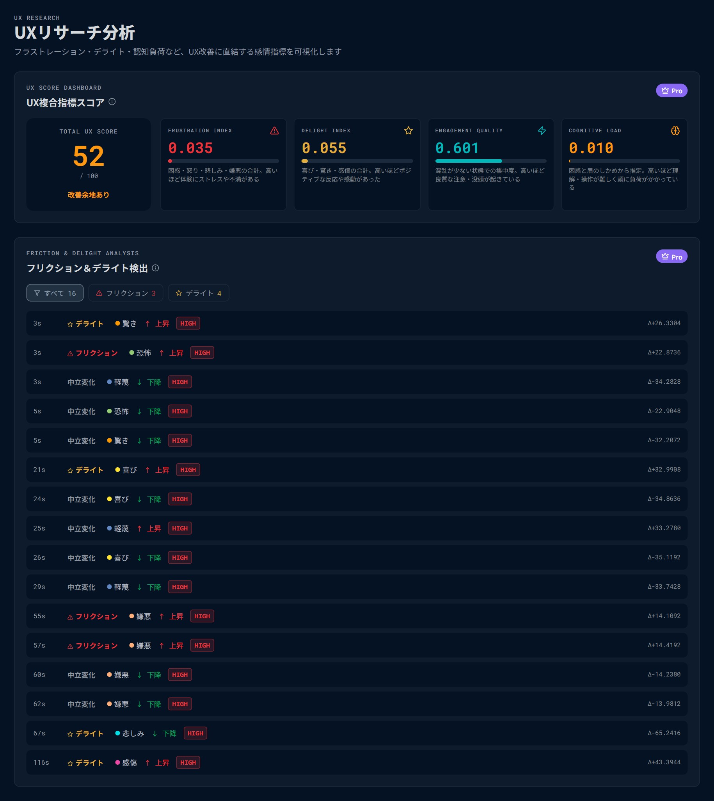
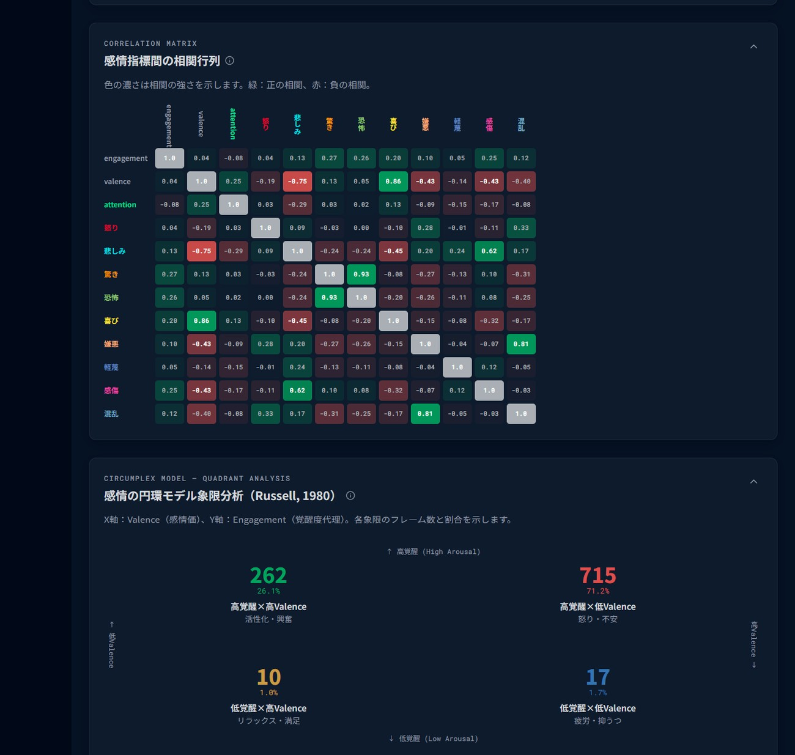
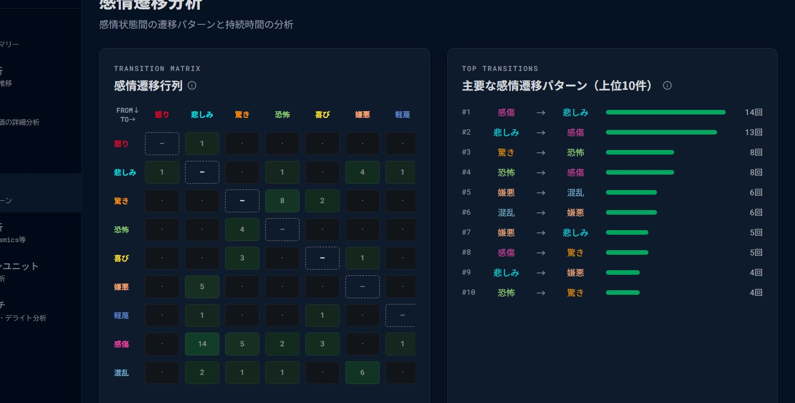
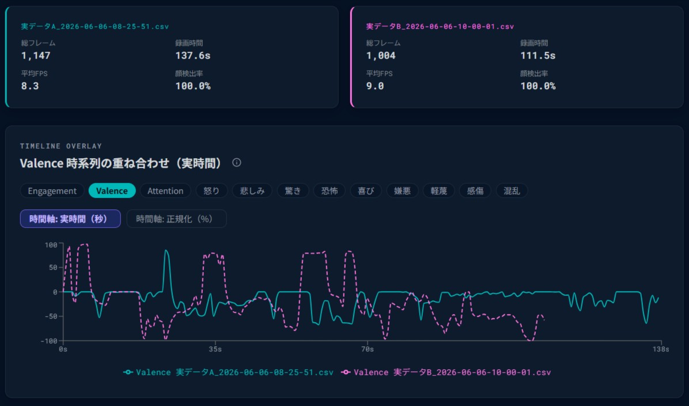

心sensor（AFFDEX互換）が出力する感情ログを、アップロードするだけ。 時系列・学術指標・UXスコアまで自動で計算し、ブラウザの中だけで完結します。

実際の分析画面（サンプルデータ）。CSVをアップロードした直後の「概要」セクション。
感情認識ツールはログを吐き出すところまで。研究で使える形にするのは、いつも自分の仕事になりがちです。
平均・分散・相関・遷移——分析は結局すべて自前で書く必要がある。動画を見返して手作業で集計するのは、時間がかかり消耗する。
Affect Dynamics（変動性・慣性・不安定性）や円環モデルを出すたびに、R / Python でコードを書き直す。理論は確立しているのに、毎回が負担。
手元のスクリプトは閉じがちで、除外基準や前処理がブラックボックスに。査読・共同研究で「どう処理したか」を示しにくい。
不規則なサンプリング、符号付き valence、1ファイルに混在する複数被験者、検出が不安定な少フレームのノイズ。前処理だけで消耗する。
CSVをブラウザに投入すると、10感情・Engagement・Valence の時系列グラフがすぐに並びます。FaceID の検出状態やノイズフレームの除外も、手を加えずに処理されます。
Affect Dynamics（変動性・慣性・不安定性）、Russell の円環モデル、相関行列、感情遷移マトリクスが自動で計算されます。R や Python のスクリプトを書かずに、査読に耐える指標が揃います。
処理はすべて手元のブラウザ内。データは外部に送られません。除外基準は出力CSVに記録され、分析の再現性も担保します。
時系列・分布・遷移・学術指標・AUなど、それぞれ独立したセクションとして用意しています。必要な分析から開けば、余計な操作は要りません。
10感情・Engagement・Valence の推移をイベント注釈付きで表示。時間範囲を絞って局所を分析。
怒り・喜び・驚き・困惑ほか10感情の強度を分布で把握。セッション全体の傾向を一目で。
10×10のヒートマップで「どの感情からどの感情へ」を可視化。状態の流れを定量化。
変動性・慣性・不安定性などの動態指標と Pearson 相関行列を自動算出。
smile・blink・brow furrow など顔表情単位の活性度を分析し、表情の構成要素まで踏み込む。
うなづき・首振り・首傾げを自動検出。発話やリアクションの手がかりに。
スコアが急変したポイント上位20件を自動抽出。注目すべき瞬間へ素早く到達。
複数被験者が混在するCSVを人物別に切り替え。不安定な少フレームはノイズとして自動除外、ラベル付けも可能。
安静時セッションとの差分で補正済みスコアを表示。個人差を均して刺激の効果を見る。
2つのセッションを並列比較。指標選択式のタイムラインオーバーレイで差分を定量評価。
すべてサンプルデータを読み込んだ実際の画面。アップロードするだけで、ここまで自動で揃います。
10種の感情をひとつのグラフに重ね、ベースラインからの変化として表示。タスクやイベントの区間を色帯で重ねられます。

フラストレーション・デライト・認知負荷を集計して総合UXスコアを出します。ヒートマップでは「どの操作タイミングで感情が動いたか」が時系列で見えます。

感情指標間の相関行列と、円環モデル（Russell, 1980）の象限分析を自動計算。Affect Dynamics の変動性・慣性も揃います。

10×10の遷移行列で状態の移り変わりを定量化。よく起きる遷移パターンを上位順にランキングします。

2セッションの感情反応を並列比較。タイムラインを実時間で重ね、Welch のt検定で有意差まで判定します。

心sensor が出力したCSVをそのまま投入。FaceID 列やデータ品質は自動で判定されます。
感情の時系列・学術指標・UXスコアまで即座に計算。セクションを切り替えて深掘りします。
必要な範囲をフィルタして書き出し。除外基準も併せて記録され、再現性のある分析結果に。
実験終了後にCSVをそのまま投入して、学術指標を確認する用途が中心です。Rで書いていた前処理コードを、毎回書き直す必要がなくなります。
プロトタイプや改修後のUIを被験者に触ってもらい、どこでフラストレーションが上がったかを見るケースで使われています。
広告視聴中の感情変化を記録して、「この素材はどこで飽きられているか」を確かめるPoC用途に。クリエイティブの比較にA/B機能を使えます。
解析処理はブラウザのみで動きます。インターネット接続がなくても動作します。
アップロードしたデータがサーバーに送られることはありません。
扱うのは感情スコア・AUの数値データのみです。氏名・映像・音声は読み込みません。
サーバーへのデータ送信がないため、GDPR・個人情報保護法の観点からもリスクが生じません。
デモの申し込み、導入前の確認、研究用途の相談など。内容を確認した上で、担当者からご連絡します。
※ 心sensor をご契約中のお客様は、現在 KSDV をご利用いただけます。 詳細はお問い合わせ時にご案内します。